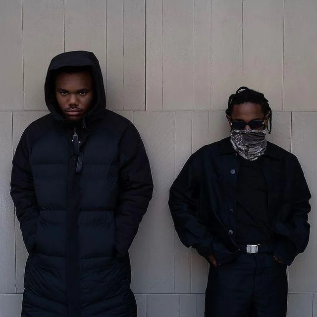
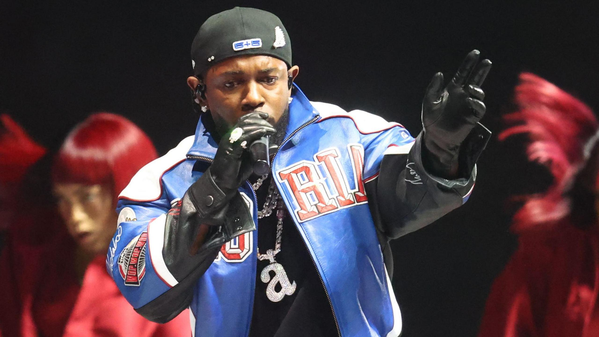
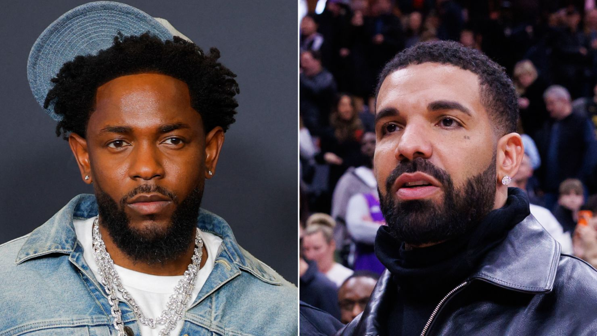

This is Kendrick Lamar
Kendrick Lamar Duckworth, born June 17, 1987, is an American rapper, songwriter, and record producer. Known for his thought-provoking lyrics and storytelling, he is considered one of the greatest rappers of his generation.
Kendrick Lamar, often known by fans as “K-Dot,” is widely regarded as one of the most influential and lyrical rappers of his generation. Born and raised in Compton, California, he rose from local mixtapes to global recognition through his storytelling, complex wordplay, and powerful social commentary. His music explores themes of identity, struggle, faith, fame, and systemic injustice, blending sharp lyricism with innovative production. Beyond commercial success, Kendrick has earned critical acclaim, multiple Grammy Awards, and even a historic Pulitzer Prize for his artistic impact on modern music and culture.
Kendrick Lamar is more than just a rapper — he’s a storyteller who turns personal experiences into powerful cultural statements. From the streets of Compton to international stages, his journey reflects growth, self-reflection, and artistic evolution. Known for his intense live performances and thought-provoking lyrics, Kendrick challenges listeners to think deeper about society, morality, and self-worth. With every album, he reinvents his sound while staying true to his roots, solidifying his place as one of the most important voices in modern hip-hop.
Baby Keem and KDOT

Baby Keem, who is also Kendrick Lamar’s cousin, has collaborated with Kendrick Lamar on several projects, strengthening their connection in the hip-hop industry. On Baby Keem’s album The Melodic Blue, Kendrick appears on the song family ties, a track that quickly became popular for its energetic beat and powerful verses from both artists. The collaboration highlights their strong chemistry and shared creativity, with Kendrick delivering a memorable performance that helped the song gain major attention from fans and critics alike. Their work together shows how both artists continue to influence modern hip-hop while supporting each other’s success.
His Achievements

Kendrick Lamar is considered one of the most successful and influential rappers of his generation. Throughout his career, he has won numerous Grammy Awards and received widespread critical acclaim for his powerful storytelling and socially conscious lyrics. In 2018, he made history by becoming the first rapper to win the Pulitzer Prize for Music for his album DAMN., a recognition of the cultural and artistic impact of his work. Albums like good kid, m.A.A.d city, To Pimp a Butterfly, and Mr. Morale & the Big Steppers have been praised for their creativity, depth, and influence on modern hip-hop, solidifying Kendrick Lamar’s legacy as one of the most important artists in contemporary music.
Kendrick Lamar vs Drake

One of the most talked-about rivalries in modern hip-hop is the long-running lyrical feud between Drake and Kendrick Lamar. The tension began in 2013 when Kendrick delivered a competitive verse on the song "Control", calling out several rappers and declaring his goal to be the best in the industry. Over the years, subtle lyrics, interviews, and competitive releases kept the rivalry alive. In 2024 the feud escalated into a series of diss tracks from both artists, sparking massive discussion online and across the music world. The battle became one of the biggest moments in hip-hop culture, with fans analyzing lyrics, symbolism, and performances as both artists defended their place at the top of the rap game.
Dr. Dre
Kendrick Lamar’s rise to fame reached a turning point when legendary producer and rapper Dr. Dre discovered his music. Around 2011, Dre heard Kendrick’s work online and was impressed by his lyrical skill and storytelling ability. After meeting and working together in the studio, Dr. Dre decided to sign Kendrick to his label, Aftermath Entertainment. This opportunity helped introduce Kendrick to a much larger audience and led to the release of his breakthrough album good kid, m.A.A.d city. The mentorship and collaboration between Kendrick and Dr. Dre played a major role in launching Kendrick Lamar into mainstream success and shaping the early part of his career.